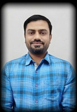

Hi, I'm Pravin Ambekar
Medical Social Worker with 8+ years in TB care, clinical research and vaccination programmes. I turn compassion into community health outcomes, one patient at a time.

Care, backed by qualification
I started as a DR-TB counsellor with the Tata Institute of Social Sciences and grew into research and field coordination at D.Y. Patil Medical College and TB Alert India. My work combines counselling, psychosocial support and community outreach, grounded in a Master's in Social Work and a Master's in Psychology.
Professional experience
Field CoordinatorNOW
- Conduct sensitization activities for frontline workers under the TB Alert India project.
- Strengthen TB awareness, screening, prevention and referral practices among frontline workers.
Medical Social Worker
- Supported the dengue vaccination study through participant outreach, counselling and follow-up.
Research Investigator
- Contributed to a TB aftermath research study, working directly with patients and participants.
DR-TB Counsellor
- Counselling and psychosocial support for drug-resistant TB patients and their families.
- Sustained patient support through long treatment courses, including the COVID-19 period.
Education & training
Master of Social Work
Bharati Vidyapeeth Deemed University, Pune
MA Psychology
Dr. Babasaheb Ambedkar Marathwada University
Diploma in Counselling
Dr. Babasaheb Ambedkar Marathwada University
Bachelor of Science
Vivekanand College, Aurangabad
D.T.Ed.
Harinaik Adhyapak College, Mantha
Fellowship Honours
Dr. Ambedkar Fellowship Rashtriya Sanman; Mahatma Jyotiba Phule National Fellowship Award
Skills & expertise
Clinical & Field
Psychology & Strengths
Workshops (2017–2022)
- Stress Management & Mental Health Week
- Learning Disabilities: Dyslexia & ADHD
- Psychological tools in counselling (2018)
- Orientation to Physiotherapy
Community Work
- Telephonic counselling during COVID-19
- Nutritional & psychosocial support campaigns in Pune slums
- Mental health awareness for OPD patients, Corporation Hospital Pune
- Internships: psychiatric hospital, autism and child therapy centres
My resume
Pravin Ambekar – Resume
One-page summary of my experience, education, skills and community work.
Work together for healthier communities
Open to public health, TB care, counselling and social work opportunities.
📍 Pune, Maharashtra, India